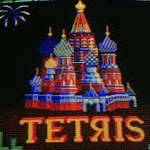
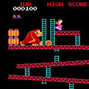
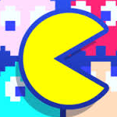
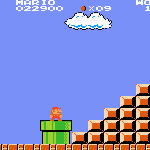

Tetris: the Russian puzzle
Tetris is a tile-matching puzzle video game, originally designed and programmed by Russian game designer
Alexey Pajitnov.[1] It was released on June 6, 1984, while he was working for the Dorodnitsyn Computing
Centre of the Academy of Science of the USSR in Moscow. He derived its name from the Greek numerical
prefix tetra- (all of the game's pieces contain four segments) and tennis, Pajitnov's favorite sport
See full article

Donkey Kong: barrels and the princess
A hallmark of the Donkey Kong series are barrels, which the Kongs use as weapons, vehicles, furniture, and
lodging. The Donkey Kong character is highly recognizable and very popular; the franchise has sold over
40 million units worldwide.
See full article

Pac-Man: welcome to Arcade games!
PAC-MAN is an arcade game developed by Namco and first released in Japan in May 1980. It was created by Japanese
video game designer Toru Iwatani. It was licensed for distribution in the United States by Midway and
released in October 1980. Immensely popular from its original release to the present day, Pac-Man is
considered one of the classics of the medium, and an icon of 1980s popular culture. Upon its release,
the game—and, subsequently, Pac-Man derivatives—became a social phenomenon that yielded high sales of
merchandise and inspired a legacy in other media, such as the Pac-Man animated television series and
the top-ten hit single "Pac-Man Fever".[11] Pac-Man was popular in the 1980s and 1990s and is still played
in the 2010s.
See full article

Mario Bros: plumbing on New York City
brother Luigi, has to defeat creatures that have been coming from the sewers below New York City. The gameplay
focuses on Mario's extermination of them by flipping them on their backs and kicking them away. The original
versions of Mario Bros.—the arcade version and the Family Computer/Nintendo Entertainment System (FC/NES)
version—were received positively by critics.
See full article